This week I had to parametrically design a small part that snap fits onto a feature of an artifact we measured in class. The point was to use tolerances, allowances, and the fit classes from lecture (RC, LC, LT, LN, and FN) to size the mating features, then print the part and test the fit. My artifact is a small oval speaker, and my part is a case that holds it in place with four snap fit lips.
The case is a hollowed out rectangular box. The speaker drops into the open end, and four small lips near the opening catch the speaker's front flange so it can't fall back out. I'm not using the speaker's four mounting holes, so nothing in the design touches them.
Machinery's Handbook (31st Ed., p. 640) defines tolerance as the amount of variation permitted on the dimensions or surfaces of machine parts. It defines allowance as a prescribed difference in dimensions used to get different classes of fits between parts. So tolerance is how much a single dimension is allowed to wander, and allowance is the gap (or overlap) I choose on purpose between two mating parts.
The speaker sits in the case like a locational clearance fit (LC). The parts have to go together freely by hand, but they should still locate each other without a lot of play. The lips are a different story. During insertion the flange has to push past a 1 mm lip, which is a temporary interference, and after that the lip springs back and holds the speaker. So the overall behavior is LC for the pocket, with the snap fit lips supplying the retention. It is not an LN or FN fit, because nothing is pressed together permanently.
Table 6 (ANSI/ASME B4.1-1967 (R2020), Machinery's Handbook 31st Ed., p. 650) gives standard tolerances in thousandths of an inch, by nominal size range and tolerance grade. I converted my measurements to inches (1 in = 25.4 mm) and pulled the row for each one.
| Feature | Size | Table 6 row (in) | Grade 7 | Grade 12 | Grade 13 |
|---|---|---|---|---|---|
| Width | 28.28 mm = 1.113 in | 0.71 to 1.19 | 0.0008 in = 0.020 mm | 0.008 in = 0.20 mm | 0.012 in = 0.30 mm |
| Length | 39.86 mm = 1.569 in | 1.19 to 1.97 | 0.0010 in = 0.025 mm | 0.010 in = 0.25 mm | 0.016 in = 0.41 mm |
| Depth | 13.34 mm = 0.525 in | 0.40 to 0.71 | 0.0007 in = 0.018 mm | 0.007 in = 0.18 mm | 0.010 in = 0.25 mm |
The precise grades a locational fit is built on are down around 0.02 to 0.06 mm for these sizes. My printer can't hold anything close to that. Table 7 in the handbook relates machining processes to tolerance grades, and 3D printing isn't on it. The closest processes it lists are milling and drilling, which run roughly from grade 10 to 13. The Bambu Lab A1 holds about 0.2 mm on small features (my working assumption, which the test print ended up confirming), and that lines up with grade 12 in the table: 0.20 mm on the width and 0.25 mm on the length.
I set the clearance to 0.2 mm per side. That puts the internal cavity at the speaker size plus 0.4 mm in each direction, so the speaker slides in by hand, and it stays inside the grade 12 tolerance band I expect from the printer. It is still a lot bigger than what the handbook expects for an LC fit, but the handbook numbers assume machining, so I used them as the design intent and used the printer's real accuracy to pick the actual number.
I measured the speaker with a digital caliper that reads to 0.01 mm. The step depths in the side profile don't matter for this design, since the case is sized to the speaker's overall envelope. The magnet is centered on the rectangle.
| Feature | Measurement |
|---|---|
| Width | 28.28 mm (rounded to 28.3 mm on my sketch and in the CAD model) |
| Length | 39.86 mm |
| Total depth | 13.34 mm |
| Front flange thickness | 3.59 mm |
| Magnet diameter | 27.85 mm |
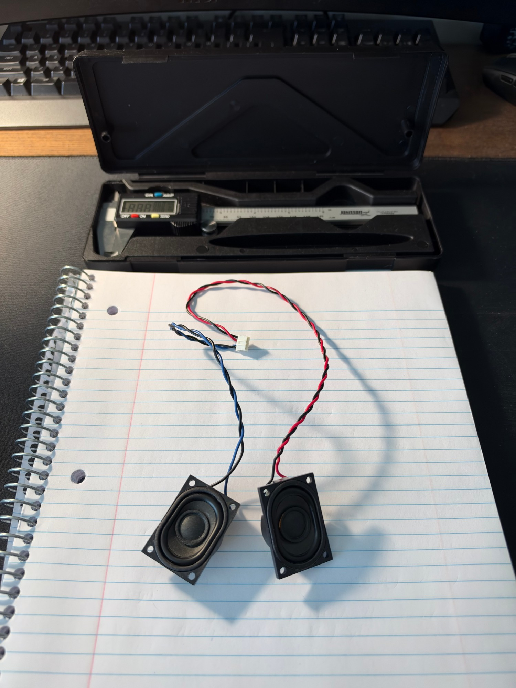
The two speakers, with the digital caliper in the background.
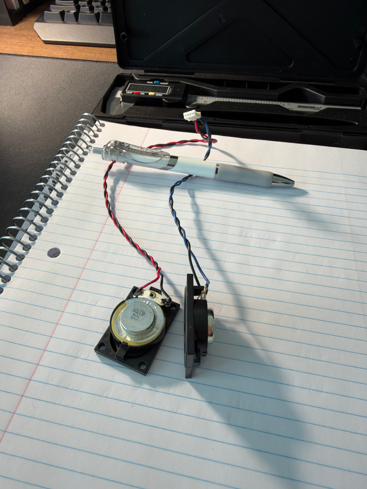
The back of the speaker. The round magnet sits in the center, and the wire terminals are soldered to the back of the frame.
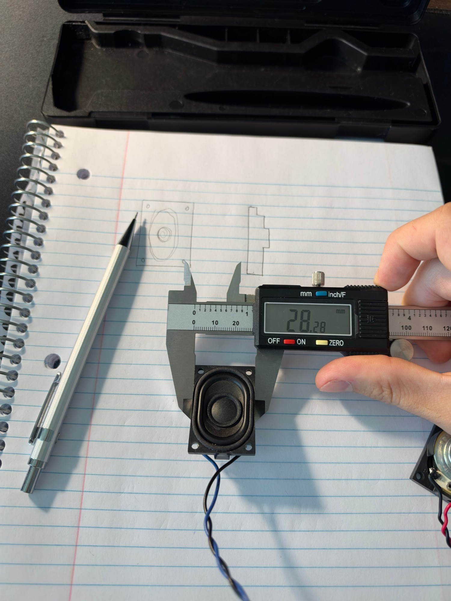
Width: 28.28 mm.
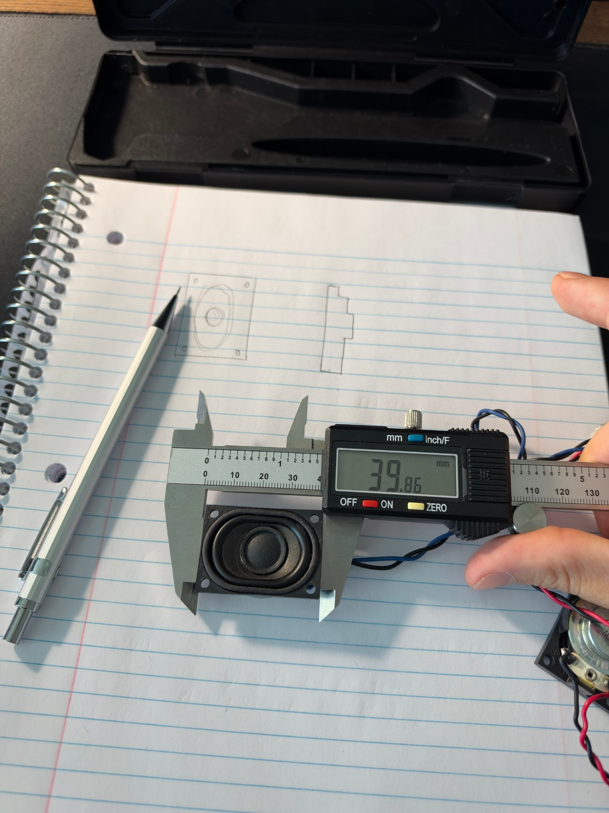
Length: 39.86 mm.
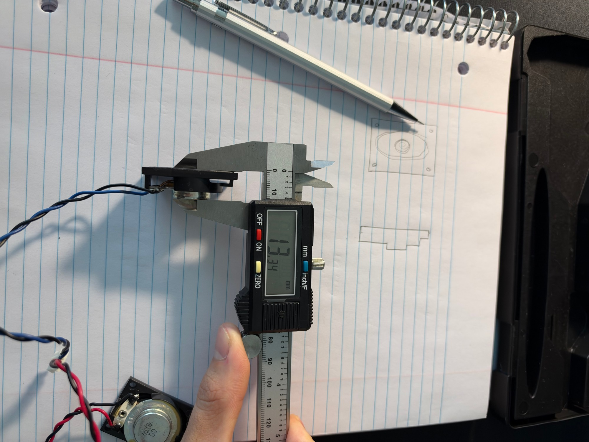
Total depth: 13.34 mm.
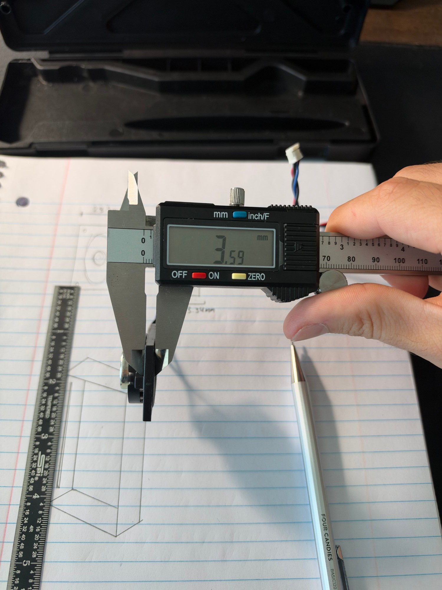
Front flange thickness: 3.59 mm.
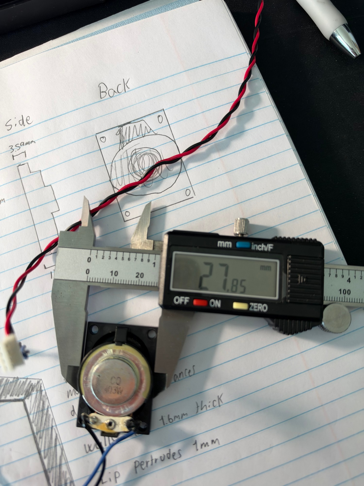
Magnet diameter: 27.85 mm.
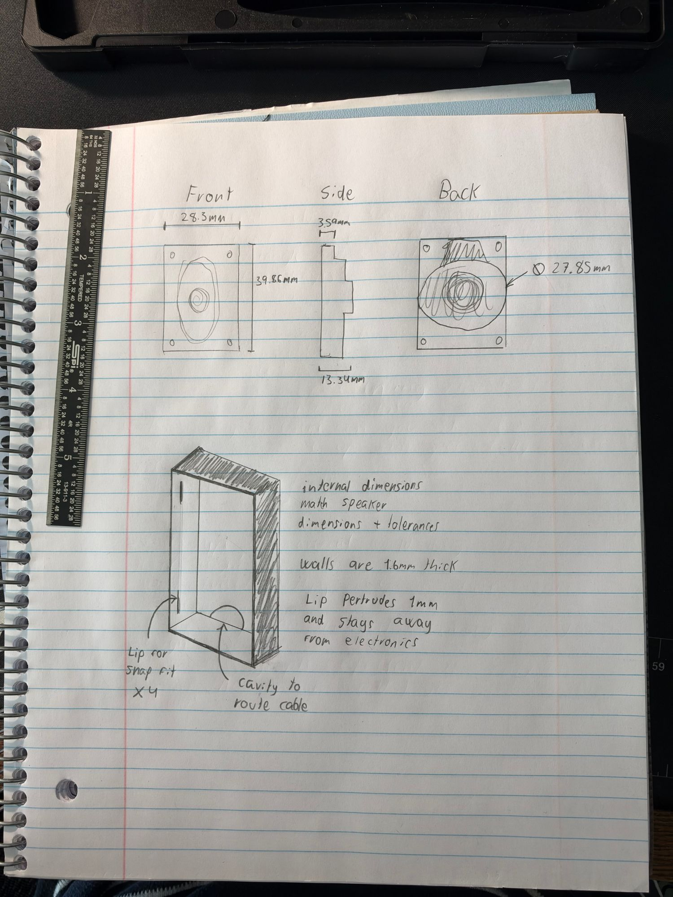
The top row is the speaker's front, side, and back views with the measurements written on. The bottom sketch is the case concept: internal dimensions that match the speaker plus tolerances, 1.6 mm walls, four lips that protrude 1 mm and stay away from the electronics, and a cavity to route the cable.
I built the case around seven global variables in SolidWorks, so that changing one number updates every sketch and feature that reads from it.
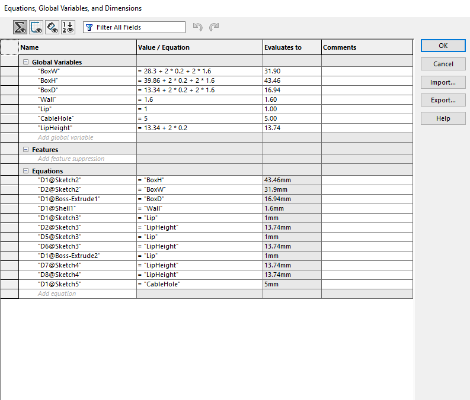
The global variables and the equations that link them to the sketches and features.
| Global variable | Equation | Value | What it does |
|---|---|---|---|
| BoxW | 28.3 + 2 × 0.2 + 2 × 1.6 | 31.90 mm | Outer width: speaker width, 0.2 mm of clearance on each side, and two walls |
| BoxH | 39.86 + 2 × 0.2 + 2 × 1.6 | 43.46 mm | Outer length: speaker length, 0.2 mm of clearance on each side, and two walls |
| BoxD | 13.34 + 2 × 0.2 + 2 × 1.6 | 16.94 mm | Case height: speaker depth, 0.2 mm of clearance on each end, and two wall thicknesses |
| Wall | 1.6 | 1.60 mm | Shell thickness |
| Lip | 1 | 1.00 mm | Lip height and how far the lip sticks out |
| CableHole | 5 | 5.00 mm | Radius of the half-round cable hole |
| LipHeight | 13.34 + 2 × 0.2 | 13.74 mm | How far the lips sit above the inside floor: speaker depth plus 0.2 mm on each end |
The internal cavity that results is 28.7 mm × 40.26 mm. Two of the lip dimensions, the 5 mm width and the 5 mm distance from the end of the wall, are constrained values in the sketch and not global variables.
BoxW, BoxH, and BoxD are the outer size of the case, so the base sketch, the extrude, and the shell all read from them. Wall, Lip, and CableHole are the features I expected to tweak after printing, and LipHeight places the lips at the right depth for the speaker. The speaker measurements and the 0.2 mm clearance are typed straight into the equations, which means changing the clearance is a one line edit in each equation.
Each lip is 5 mm wide, 1 mm tall, and sticks out 1 mm from the wall. The entry side has a chamfer of 1 mm at 45°, which is the full protrusion of the lip, so the entry face is a smooth ramp for the flange to ride up. The other side is flat, so the lip can't slide off once it's on top of the flange. I didn't do any beam calculations for this assignment. The lip's job is only to hold a light speaker in place.
I modeled the case in SolidWorks. The dimensions with a red sigma symbol in the screenshots are driven by equations, so they follow the parameters above. The green symbols in the sketches are constraints.
The assignment asks for the artifact's feature to be recreated in CAD. I didn't model the speaker as a separate part. Instead I recreated its overall envelope (28.3 mm × 39.86 mm × 13.34 mm) as the cavity of the case, since the case only has to match the outside of the speaker.
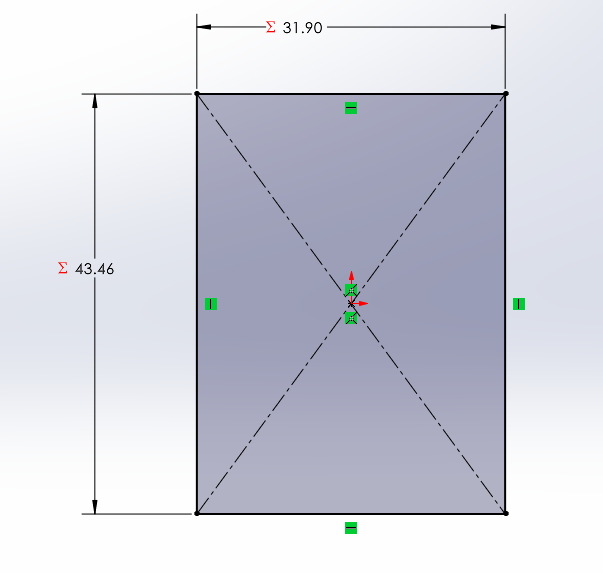
Step 1, sketch the box: I sketched a rectangle centered on the origin, using diagonal construction lines through the corners to center it. It is constrained horizontal and vertical, and the width (31.90 mm) and length (43.46 mm) come from the BoxW and BoxH variables.
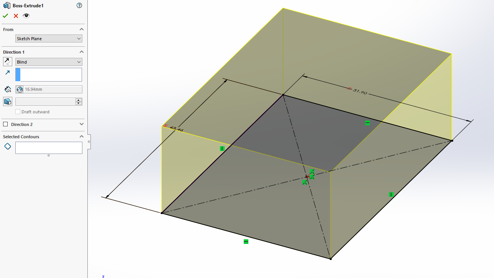
Step 2, extrude the box: Boss-Extrude, blind, 16.94 mm, which is the height of the case and comes from the BoxD variable.
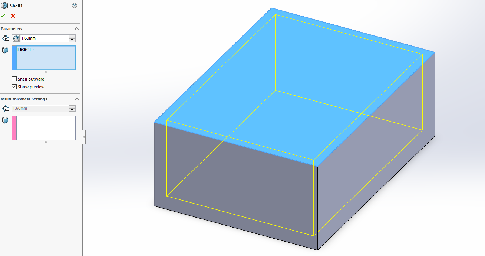
Step 3, shell the box: Shell with a 1.60 mm thickness from the Wall variable, removing the top face to make the open end the speaker goes into.
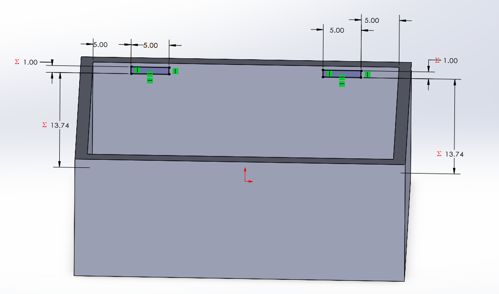
Step 4, sketch the lips: On the inside face of a long wall I sketched two rectangles, each 5.00 mm wide and 1.00 mm tall, 5.00 mm from each end of the wall. Their position is 13.74 mm, measured from the bottom of the hollowed out area (the inside floor), and it is driven by the LipHeight variable. The lip height is driven by the Lip variable, and the two lips are constrained equal to each other so they always match.
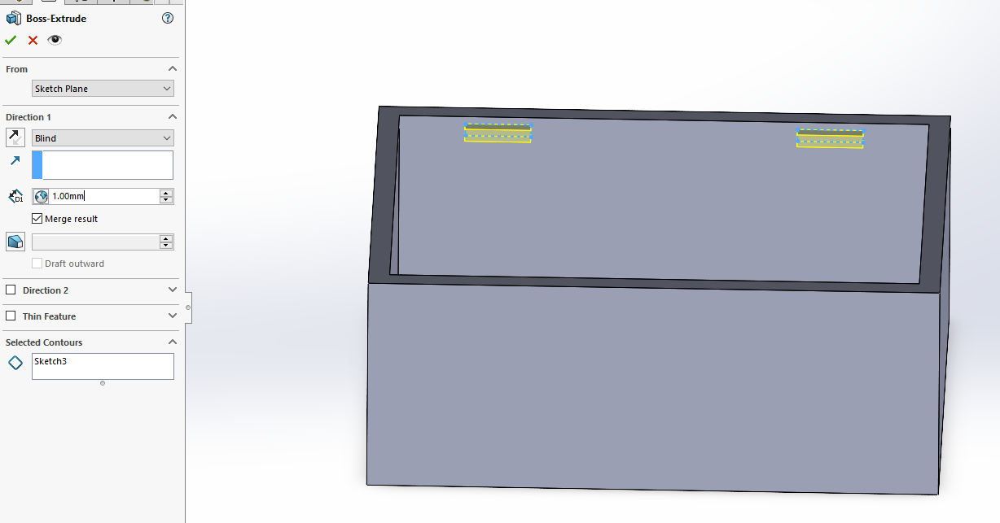
Step 5, extrude the lips: Boss-Extrude, blind, 1.00 mm from the Lip variable, with Merge result checked so the lips become part of the case.
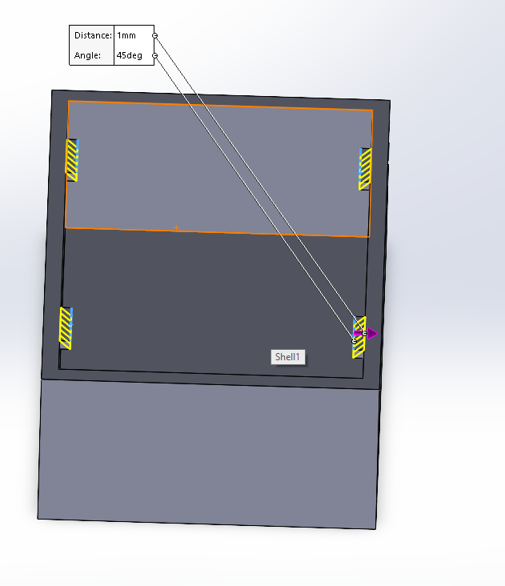
Step 6, chamfer the lips: Chamfer with a distance of 1 mm and an angle of 45° on the entry edge of each lip, so the flange can slide over it easily.
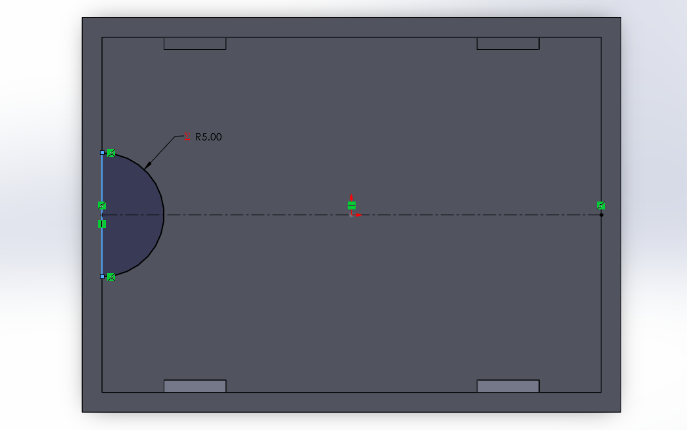
Step 7, sketch the cable hole: On the floor of the case I sketched a half circle with a 5.00 mm radius, driven by the CableHole variable. Its flat side lies on the inside face of the short wall, and it is centered on the centerline of the box. The four lips can be seen along the long walls.
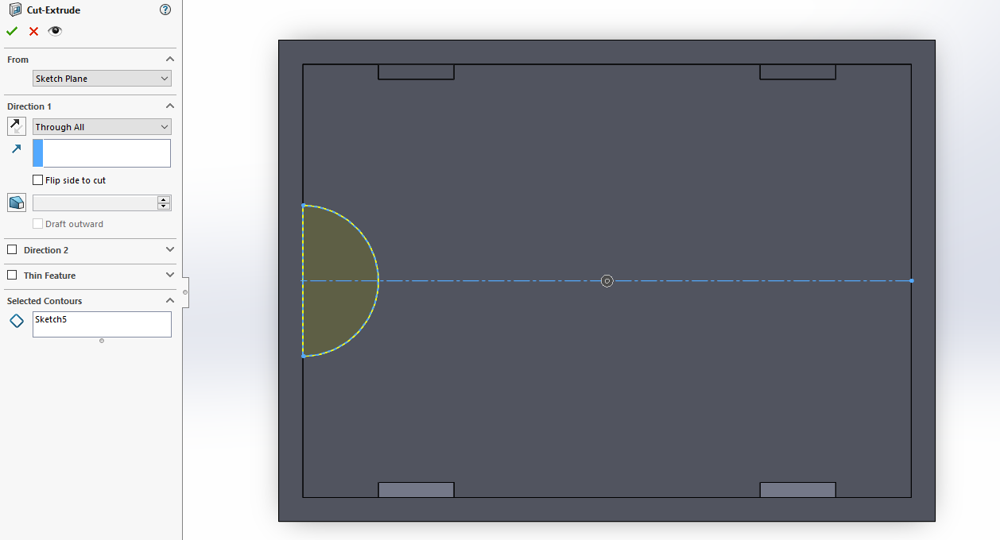
Step 8, cut the cable hole: Cut-Extrude, Through All, which cuts the half circle through the back of the case.
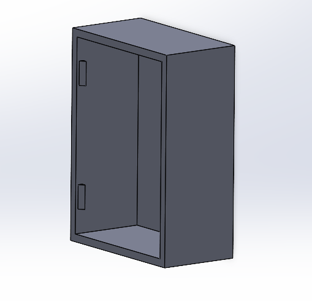
Finished CAD model: The complete case, an open rectangular box with the lips on the inside of the long walls. Two of the four lips are visible on the near inside wall.
I printed on a Bambu Lab A1 with a 0.4 mm nozzle and a 256 mm build volume, in Overture Matte PLA (green). I printed two cases at once, side by side, one for each of the two speakers. I left them in the layout Bambu Studio recommended.
Each case is 31.90 mm × 43.46 mm × 16.94 mm, which is a bounding box of about 23.5 cm³.
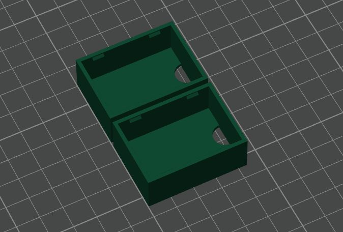
The two cases on the plate in Bambu Studio.
The back of the case sits flat on the plate and the hollow part faces up. I chose that orientation because it needs the least amount of support and it prints faster. The only overhangs are the lips, and each one is a 1 mm ledge that is 5 mm wide, so it is small. The chamfer is on the top of the lip, which means it doesn't create an overhang.
I enabled tree supports (auto) in the slicer as a precaution, but the overhang is so small that they weren't needed. No supports printed, so there were no supports to size and nothing to remove.
I sliced in Bambu Studio with the 0.20mm Standard @BBL A1 process.
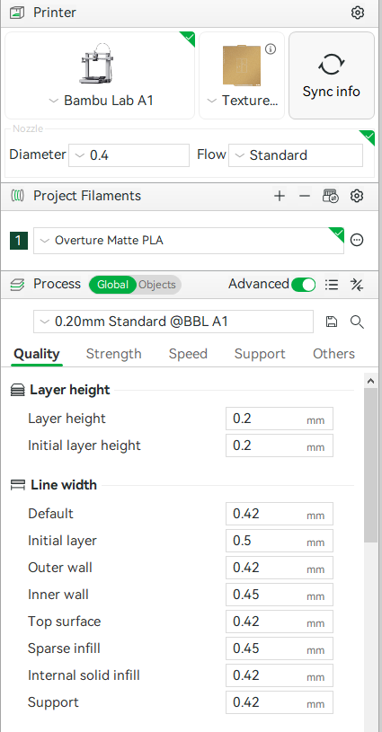
Printer, filament, and quality: Bambu Lab A1, 0.4 mm nozzle, Overture Matte PLA, process 0.20mm Standard @BBL A1. Layer height and initial layer height are both 0.2 mm. Line widths are 0.42 mm for the default, outer wall, top surface, and internal solid infill, 0.45 mm for the inner wall and sparse infill, and 0.5 mm for the initial layer.
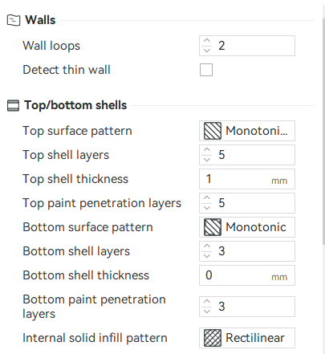
Walls and shells: 2 wall loops, 5 top shell layers (1 mm), and 3 bottom shell layers (0.6 mm). The bottom and top shells add up to 1.6 mm, which is the thickness of the back of the case, so the back plate prints solid.
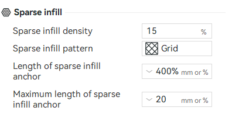
Infill: 15 percent, grid pattern. The case is mostly thin wall, so the infill barely shows up.
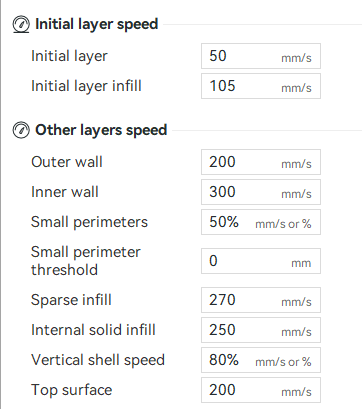
Speed: initial layer 50 mm/s and initial layer infill 105 mm/s. Outer wall 200 mm/s, inner wall 300 mm/s, sparse infill 270 mm/s, internal solid infill 250 mm/s, and top surface 200 mm/s. A slow first layer helps the case stick to the plate.
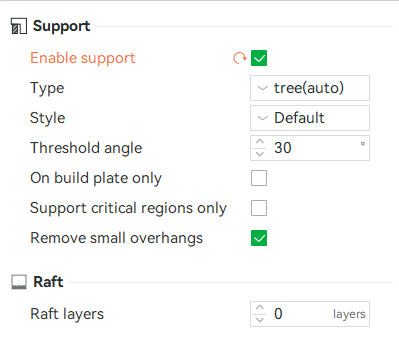
Supports: enabled, tree (auto), threshold angle 30°, remove small overhangs on, 0 raft layers.
Why these settings: they are the standard Bambu Studio settings for Overture Matte PLA on the A1, so I kept them and only enabled supports.
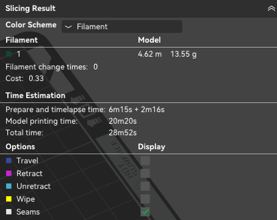
Slicing result: 4.62 m of filament, 13.55 g for both cases. Model printing time is 20 minutes 20 seconds, and the total time with preparation is 28 minutes 52 seconds.
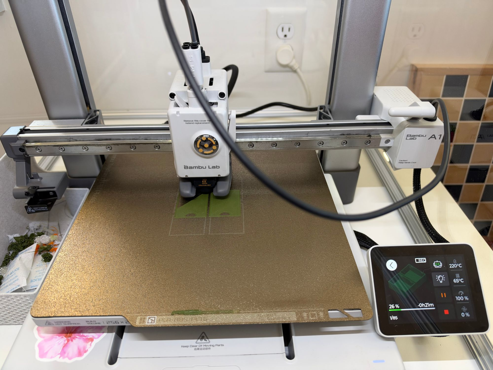
The print at 26 percent, with 21 minutes left. The nozzle is at 220°C and the bed is at 65°C.
Video of the two cases printing on the A1.
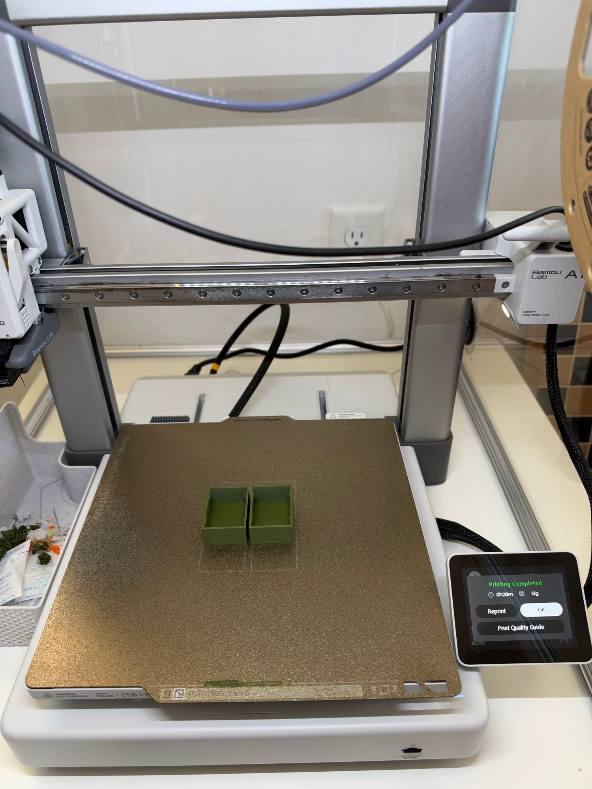
The finished print on the plate. The screen shows Printing Completed, 28 minutes and 13 g.
I printed the case and tested it with the speaker before class. The speaker fit on the first print, so I didn't need to modify the design after printing. The only changes I made were the ones I made before printing, when I settled on 0.2 mm of clearance.
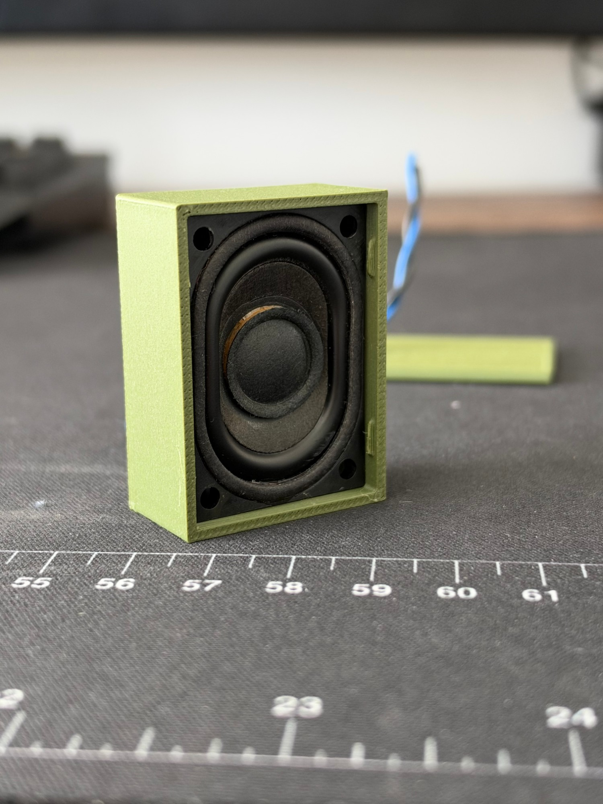
The speaker snapped into the printed case. Two of the lips are visible along the right wall, holding the front flange in place. The wires come out through the half-round hole in the back.
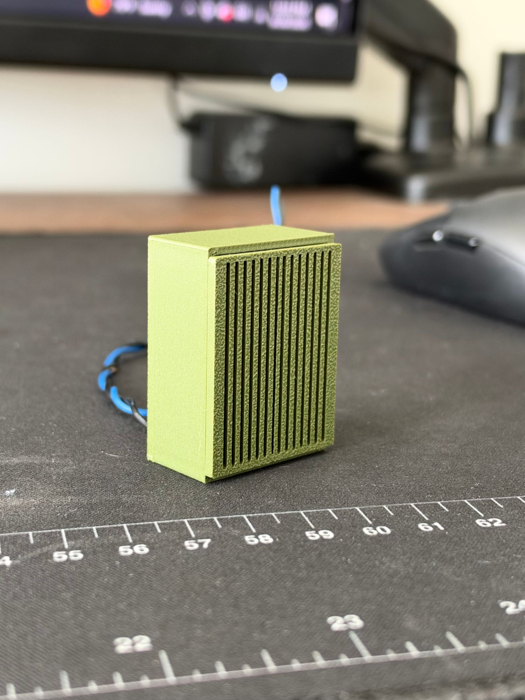
Not part of the assignment, but I also made a slotted grille cover for the front of the case because I thought it would look good.
The speaker snaps into the case and stays in place. The snap fit gets tested in class.
Handbook tolerances are for machining: The tables in Machinery's Handbook assume machining, and the tolerances for an LC fit are far tighter than what an FDM printer can hold. I used the table as the design intent and picked the actual allowance from the printer's real accuracy.
Mistake, being too cautious with the clearance: I first went up to 0.4 mm per side to be safe, which is well past what the handbook expects and hard to justify. I went back to 0.2 mm, which is what the printer can actually hold, and the speaker fit on the first print.
Mistake, typing the clearance into the equations: When I set up the global variables I typed the speaker sizes and the 0.2 mm clearance directly into the BoxW, BoxH, BoxD, and LipHeight equations. That works, but changing the clearance means editing four equations. Next time I would make the speaker sizes and the clearance their own variables so each number only lives in one place.
Thin walls flex on their own: I planned relief cuts around the lips, but 1.6 mm walls already flex enough for the speaker to snap in, so I skipped them and the design stayed simpler.
Small overhangs don't need supports: I turned supports on in the slicer as a precaution, but the 1 mm lip overhang was small enough that none were needed. Printing with the open side up is what made that possible.
Rounding: The caliper read 28.28 mm for the width and I used 28.3 mm in the model. The 0.02 mm difference is far below the printer's accuracy, so it didn't matter, but I noted it so the numbers in the model and the measurements can be traced.
Time and resources: The whole project took about 4 hours from start to finish. That includes measuring, sketching, modeling in SolidWorks, slicing, and testing the fit, and the print itself took 28 minutes 52 seconds. The resources I used are listed below.
Machinery's Handbook, 31st Ed., p. 640 (tolerance and allowance definitions) and p. 650 (Table 6, Standard Tolerances, and Table 7, Relation of Machining Processes to Tolerance Grades, ANSI/ASME B4.1-1967 (R2020))
Bambu Lab A1 3D printer, Bambu Studio slicer, SolidWorks, Overture Matte PLA, and a digital caliper (0.01 mm resolution)
Speaker case (SolidWorks part): L06-SpeakerBox.SLDPRT